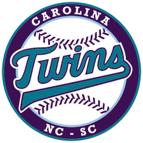
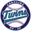

Low Minors · 3B
Wes Bankston
- Team

Carolina Twins- Organization
- Atlanta Braves
- Position
- 3B
- Bats/Throws
- R/R
- Height/Weight
- 6'4", 215 lb
- Born
- Nov 23, 1983 in Dallas, TX
- Age
- 18
- Uniform
- #34
AVG/OBP/SLG.364/.427/.496
HR2
RBI16
SB3
OPS+134league = 100
WAR0.6OOTP
2002 batting
| Team | Lg | G | PA | AB | R | H | 2B | 3B | HR | RBI | BB | K | SB | AVG | OBP | SLG | OPS |
|---|---|---|---|---|---|---|---|---|---|---|---|---|---|---|---|---|---|
| CaTw | Low Minors | 30 | 122 | 110 | 12 | 41 | 7 | 1 | 1 | 13 | 11 | 19 | 3 | .373 | .434 | .482 | .916 |
| AuGr | High Minors | 5 | 21 | 19 | 3 | 6 | 2 | 0 | 1 | 3 | 2 | 3 | 0 | .316 | .381 | .579 | .960 |
2002 batting, advanced
| Team | Lg | PA | Pit/PA | SH | SF | HBP | IBB | GIDP | CS | OPS+ | ISO | BABIP | BB% | K% | WPA | UBR | WAR |
|---|---|---|---|---|---|---|---|---|---|---|---|---|---|---|---|---|---|
| CaTw | Low Minors | 122 | 3.49 | 0 | 0 | 1 | 0 | 2 | 5 | 133 | .109 | .444 | 9.0% | 15.6% | 0.23 | -3.3 | 0.5 |
| AuGr | High Minors | 21 | 3.76 | 0 | 0 | 0 | 0 | 0 | 0 | 141 | .263 | .333 | 9.5% | 14.3% | 0.12 | -0.4 | 0.0 |
Streaks
Longest hitting streak: 11 games (Apr 2 to Apr 15); current: none
Longest on-base streak: 15 games (Apr 27 to May 12)
Batting splits
| Split | G | PA | AB | R | H | 2B | 3B | HR | RBI | BB | K | SB | AVG | OBP | SLG | OPS | ISO | BABIP | BB% | K% |
|---|---|---|---|---|---|---|---|---|---|---|---|---|---|---|---|---|---|---|---|---|
| vs LHP | 17 | 36 | 33 | 3 | 8 | 3 | 1 | 0 | 5 | 2 | 6 | - | .242 | .306 | .394 | .699 | .152 | .296 | 5.6% | 16.7% |
| vs RHP | 31 | 107 | 96 | 12 | 39 | 6 | 0 | 2 | 11 | 11 | 16 | - | .406 | .467 | .531 | .999 | .125 | .474 | 10.3% | 15.0% |
| Home | 18 | 74 | 64 | 9 | 23 | 4 | 1 | 1 | 10 | 9 | 14 | 2 | .359 | .446 | .500 | .946 | .141 | .449 | 12.2% | 18.9% |
| Road | 17 | 69 | 65 | 6 | 24 | 5 | 0 | 1 | 6 | 4 | 8 | 1 | .369 | .406 | .492 | .898 | .123 | .411 | 5.8% | 11.6% |
By month
| Month | G | PA | AB | R | H | 2B | 3B | HR | RBI | BB | K | SB | AVG | OBP | SLG | OPS | ISO | BABIP | BB% | K% |
|---|---|---|---|---|---|---|---|---|---|---|---|---|---|---|---|---|---|---|---|---|
| April | 23 | 96 | 87 | 10 | 30 | 7 | 0 | 2 | 10 | 9 | 15 | 2 | .345 | .406 | .494 | .901 | .149 | .400 | 9.4% | 15.6% |
| May | 12 | 47 | 42 | 5 | 17 | 2 | 1 | 0 | 6 | 4 | 7 | 1 | .405 | .468 | .500 | .968 | .095 | .486 | 8.5% | 14.9% |
Situational
| Situation | PA | AB | H | 2B | 3B | HR | RBI | BB | K | AVG | OBP | SLG | OPS |
|---|---|---|---|---|---|---|---|---|---|---|---|---|---|
| Bases empty | 68 | 61 | 24 | 4 | 0 | 0 | 0 | 6 | 8 | .393 | .456 | .459 | .915 |
| Runners on | 75 | 68 | 23 | 5 | 1 | 2 | 16 | 7 | 14 | .338 | .400 | .529 | .929 |
| Runners in scoring position | 57 | 53 | 14 | 3 | 0 | 2 | 15 | 4 | 11 | .264 | .316 | .434 | .750 |
| RISP, two outs | 28 | 28 | 6 | 2 | 0 | 1 | 6 | 0 | 6 | .214 | .214 | .393 | .607 |
| Innings 1-3 | 45 | 42 | 12 | 0 | 1 | 0 | 2 | 2 | 6 | .286 | .333 | .333 | .667 |
| Innings 4-6 | 57 | 49 | 20 | 3 | 0 | 2 | 8 | 8 | 10 | .408 | .491 | .592 | 1.083 |
| Innings 7-9 | 40 | 37 | 14 | 5 | 0 | 0 | 6 | 3 | 6 | .378 | .425 | .514 | .939 |
| Extra innings | 1 | 1 | 1 | 1 | 0 | 0 | 0 | 0 | 0 | 1.000 | 1.000 | 2.000 | 3.000 |
Situational splits are rebuilt from every plate appearance in the export (base/out state when the PA began). "RBI" counts runs batted in on that PA.
2002 batting game log
| Date | Opp | Score | Pos | Bat | PA | AB | R | H | 2B | 3B | HR | RBI | BB | K | SB | CS | HBP | GIDP | WPA |
|---|---|---|---|---|---|---|---|---|---|---|---|---|---|---|---|---|---|---|---|
| May 13 | @Queb | L 3-9 | PH | 8 | 1 | 1 | 0 | 0 | 0 | 0 | 0 | 0 | 0 | 0 | 0 | 0 | 0 | 0 | -0.081 |
| May 12 | @Queb | L 8-9 | 3B | 5 | 5 | 4 | 1 | 1 | 1 | 0 | 0 | 0 | 1 | 1 | 0 | 0 | 0 | 0 | 0.028 |
| May 11 | @Queb | W 11-3 | 3B | 6 | 5 | 5 | 1 | 3 | 0 | 0 | 0 | 1 | 0 | 0 | 0 | 2 | 0 | 1 | 0.029 |
| May 10 | vsBAYA | W 2-1 | 3B | 6 | 3 | 3 | 1 | 2 | 0 | 0 | 0 | 1 | 0 | 0 | 1 | 0 | 0 | 0 | 0.305 |
| May 9 | vsBAYA | W 12-8 | 3B | 8 | 4 | 3 | 0 | 1 | 0 | 0 | 0 | 0 | 1 | 1 | 0 | 0 | 0 | 1 | -0.007 |
| May 8 | vsBAYA | W 3-2 | 3B | 6 | 4 | 4 | 0 | 2 | 0 | 0 | 0 | 0 | 0 | 1 | 0 | 0 | 0 | 0 | -0.009 |
| May 6 | @NoDes | L 4-5 | 3B | 7 | 4 | 3 | 0 | 2 | 0 | 0 | 0 | 0 | 1 | 0 | 0 | 0 | 0 | 0 | 0.044 |
| May 5 | @NoDes | L 3-4 | 3B | 7 | 4 | 4 | 0 | 1 | 0 | 0 | 0 | 0 | 0 | 2 | 0 | 0 | 0 | 0 | -0.127 |
| May 4 | @NoDes | L 2-3 | 1B | 6 | 3 | 3 | 0 | 1 | 0 | 0 | 0 | 0 | 0 | 0 | 0 | 0 | 0 | 0 | -0.015 |
| May 3 | vsKNOX | W 5-0 | RF | 6 | 4 | 3 | 0 | 0 | 0 | 0 | 0 | 1 | 0 | 0 | 0 | 0 | 1 | 0 | 0.023 |
| May 2 | vsKNOX | W 9-3 | 1B | 6 | 5 | 5 | 1 | 2 | 1 | 1 | 0 | 2 | 0 | 1 | 0 | 0 | 0 | 0 | 0.095 |
| May 1 | vsKNOX | W 8-3 | 1B | 7 | 5 | 4 | 1 | 2 | 0 | 0 | 0 | 1 | 1 | 1 | 0 | 0 | 0 | 0 | 0.003 |
| Apr 30 | @GAST | W 8-7 | 3B | 7 | 5 | 5 | 0 | 3 | 0 | 0 | 0 | 0 | 0 | 0 | 0 | 0 | 0 | 0 | 0.018 |
| Apr 29 | @GAST | W 4-2 | 3B | 7 | 4 | 4 | 0 | 2 | 0 | 0 | 0 | 0 | 0 | 0 | 1 | 0 | 0 | 0 | 0.006 |
| Apr 28 | @GAST | W 7-5 | 1B | 7 | 5 | 4 | 1 | 1 | 0 | 0 | 0 | 1 | 1 | 0 | 0 | 0 | 0 | 0 | 0.033 |
| Apr 27 | vsQCRB | W 9-2 | 1B | 7 | 4 | 2 | 2 | 1 | 0 | 0 | 0 | 0 | 2 | 1 | 0 | 1 | 0 | 0 | 0.082 |
| Apr 26 | vsQCRB | W 1-0 | 1B | 7 | 3 | 3 | 0 | 0 | 0 | 0 | 0 | 0 | 0 | 1 | 0 | 0 | 0 | 0 | -0.089 |
| Apr 25 | vsQCRB | L 3-4 | 1B | 7 | 4 | 4 | 0 | 2 | 1 | 0 | 0 | 0 | 0 | 2 | 0 | 0 | 0 | 0 | 0.013 |
| Apr 23 | @ROCH | L 1-6 | RF | 6 | 4 | 4 | 0 | 0 | 0 | 0 | 0 | 0 | 0 | 1 | 0 | 0 | 0 | 0 | -0.078 |
| Apr 21 | @ROCH | L 8-9 | 3B | 5 | 6 | 6 | 1 | 4 | 1 | 0 | 0 | 0 | 0 | 0 | 0 | 0 | 0 | 0 | 0.120 |
| Apr 20 | vsHARR | W 12-5 | RF | 6 | 5 | 4 | 1 | 2 | 1 | 0 | 0 | 2 | 1 | 0 | 1 | 0 | 0 | 0 | -0.013 |
| Apr 19 | vsHARR | W 14-4 | RF | 5 | 4 | 4 | 0 | 2 | 0 | 0 | 0 | 0 | 0 | 1 | 0 | 0 | 0 | 0 | -0.067 |
| Apr 18 | vsHARR | W 4-1 | 3B | 5 | 5 | 5 | 0 | 0 | 0 | 0 | 0 | 0 | 0 | 0 | 0 | 0 | 0 | 0 | -0.139 |
| Apr 17 | @ARCH | L 0-1 | RF | 4 | 2 | 2 | 0 | 0 | 0 | 0 | 0 | 0 | 0 | 0 | 0 | 0 | 0 | 0 | -0.029 |
| Apr 15 | @ARCH | L 3-7 | RF | 5 | 5 | 5 | 0 | 1 | 0 | 0 | 0 | 0 | 0 | 0 | 0 | 1 | 0 | 0 | -0.134 |
| Apr 14 | vsJaMag | W 2-0 | RF | 7 | 3 | 2 | 0 | 1 | 1 | 0 | 0 | 1 | 1 | 0 | 0 | 1 | 0 | 0 | 0.105 |
| Apr 13 | vsJaMag | L 4-5 | RF | 5 | 5 | 4 | 1 | 1 | 0 | 0 | 0 | 0 | 1 | 2 | 0 | 0 | 0 | 0 | -0.006 |
| Apr 12 | vsJaMag | W 10-2 | RF | 7 | 4 | 4 | 1 | 2 | 0 | 0 | 1 | 2 | 0 | 1 | 0 | 0 | 0 | 0 | -0.033 |
| Apr 10 | @RedSt | L 3-9 | 3B | 6 | 3 | 2 | 0 | 1 | 1 | 0 | 0 | 1 | 1 | 1 | 0 | 0 | 0 | 0 | 0.203 |
| Apr 8 | @RedSt | L 5-7 | RF | 7 | 4 | 4 | 0 | 1 | 0 | 0 | 0 | 0 | 0 | 2 | 0 | 0 | 0 | 0 | -0.052 |
| Apr 7 | vsOtLy | L 6-19 | 1B | 9 | 4 | 4 | 0 | 1 | 0 | 0 | 0 | 0 | 0 | 1 | 0 | 0 | 0 | 0 | -0.016 |
| Apr 6 | @LVIP | W 10-3 | DH | 9 | 5 | 5 | 1 | 1 | 1 | 0 | 0 | 0 | 0 | 0 | 0 | 0 | 0 | 0 | -0.051 |
| Apr 5 | @LVIP | L 4-7 | 1B | 9 | 4 | 4 | 1 | 2 | 1 | 0 | 1 | 3 | 0 | 1 | 0 | 0 | 0 | 0 | 0.195 |
| Apr 3 | vsAsTo | W 6-1 | 1B | 9 | 4 | 3 | 0 | 1 | 0 | 0 | 0 | 0 | 1 | 1 | 0 | 0 | 0 | 0 | -0.032 |
| Apr 2 | vsAsTo | W 10-6 | 1B | 9 | 4 | 3 | 1 | 1 | 0 | 0 | 0 | 0 | 1 | 0 | 0 | 0 | 0 | 0 | 0.029 |
2002 fielding by position
| Team | Lg | Pos | G | GS | Inn | TC | PO | A | E | DP | FPct | ZR | Arm | Framing | SB | CS | CS% | PB |
|---|---|---|---|---|---|---|---|---|---|---|---|---|---|---|---|---|---|---|
| CaTw | Low Minors | 3B | 12 | 12 | 100.1 | 33 | 10 | 18 | 5 | 1 | .848 | -1.1 | - | - | - | - | - | - |
| CaTw | Low Minors | RF | 11 | 10 | 83.0 | 22 | 22 | 0 | 0 | 0 | 1.000 | 0.5 | 1.2 | - | - | - | - | - |
| CaTw | Low Minors | 1B | 7 | 7 | 58.2 | 56 | 54 | 2 | 0 | 5 | 1.000 | -0.1 | - | - | - | - | - | - |
| AuGr | High Minors | 1B | 4 | 4 | 34.0 | 33 | 29 | 4 | 0 | 3 | 1.000 | -0.7 | - | - | - | - | - | - |
ZR (zone rating), Arm and Framing are OOTP's runs-above-average figures. SB/CS/CS% are base stealers against him as a catcher.
Career batting
Injury history (2002)
| Date | Expected days out | Day-to-day | Setbacks |
|---|---|---|---|
| May 2 | 2 | Yes | 0 |
Most frequent matchups pitchers he has faced
| Pitcher | AB | H | HR | AVG |
|---|---|---|---|---|
| Kasey Olenberger | 3 | 3 | 0 | 1.000 |
| Julio Villalon | 3 | 2 | 0 | .667 |
| Enrique Gonzalez | 3 | 2 | 0 | .667 |
| Adrian Vazquez | 3 | 2 | 0 | .667 |
| Juan Manuel Palafox | 3 | 2 | 0 | .667 |
| Chris Steinborn | 3 | 1 | 0 | .333 |
| Russ Savickas | 3 | 1 | 0 | .333 |
| Jeff Bittiger | 3 | 1 | 0 | .333 |
| Dave Glick | 3 | 1 | 0 | .333 |
| Ricardo Osuna | 3 | 1 | 0 | .333 |
| Daylan Childress | 3 | 0 | 0 | .000 |
| Mike Paradis | 3 | 0 | 0 | .000 |
| J.D. Martin | 3 | 0 | 0 | .000 |
| Darin Blood | 2 | 2 | 0 | 1.000 |
| Shane Bazzell | 2 | 2 | 0 | 1.000 |